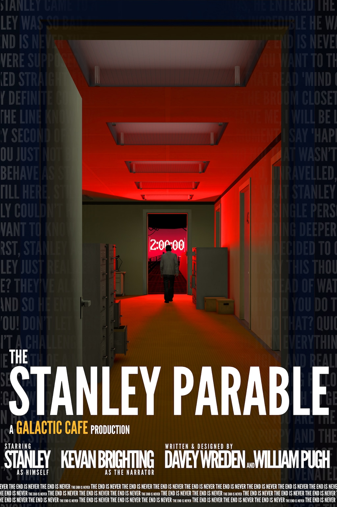

Publishing Info
- Published by: Galactic Cafe
- Developed by: Galactic Cafe
- Released: October 17, 2013 on Windows
Description

The Stanley Parable is a first person exploration game. You will play as Stanley, and you will not play as Stanley. You will follow a story, you will not follow a story. You will have a choice, you will have no choice. The game will end, the game will never end. Contradiction follows contradiction, the rules of how games should work are broken, then broken again. This world was not made for you to understand. But as you explore, slowly, meaning begins to arise, the paradoxes might start to make sense, perhaps you are powerful after all. The game is not here to fight you; it is inviting you to dance.
Game Categories
- Genre: Adventure
- Perspective: 1st-person
- Interface: Direct Control
- Narrative: Comedy
- Players: 1 Player
Quote
Effortlessly inventive, frequently surprising and consistently hilarious. The Stanley Parable shows how to make a story about game stories.
--Phil Savage, PC Gamer (25 October 2013).